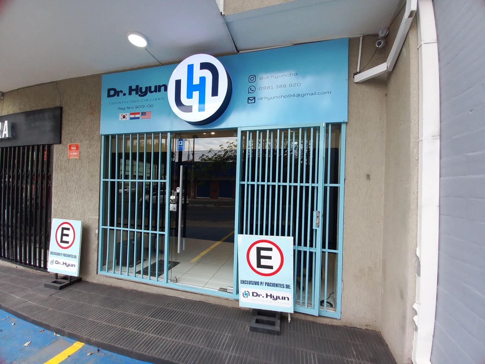

01 / MISIÓN
Cuidar con cercanía.
Brindar atención odontológica centrada en las necesidades de cada persona, con comunicación clara, respeto y compromiso con su bienestar.
Un espacio de atención odontológica en Asunción, Paraguay.

Dr. Hyun Odontología es un consultorio ubicado en la Av. Dr. José Gaspar Rodríguez de Francia 1175, en Asunción. La atención del Dr. Cho y su equipo forma parte de las experiencias que nuestros pacientes comparten.
Nuestra propuesta es sencilla: escuchar, orientar y ofrecer una atención cercana. Queremos que puedas expresar tus dudas y sentirte acompañado al tomar decisiones sobre tu salud bucal.
Agenda tu cita ↗Brindar atención odontológica centrada en las necesidades de cada persona, con comunicación clara, respeto y compromiso con su bienestar.
Aspiramos a ser un consultorio de referencia para quienes valoran una atención humana y una relación de confianza con su odontólogo.
Respeto por cada paciente. Escucha atenta. Honestidad en la orientación. Responsabilidad en el cuidado. Trato amable.
Promover el cuidado de la salud bucal, facilitar el acceso a la consulta y ayudar a cada paciente a comprender sus opciones de atención.